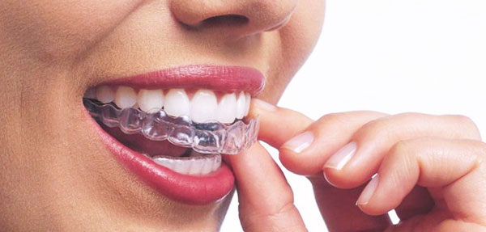
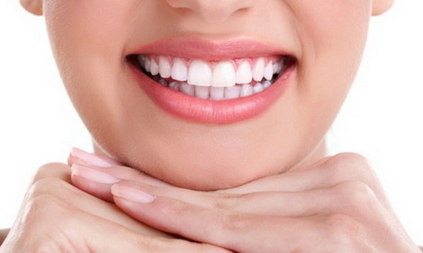
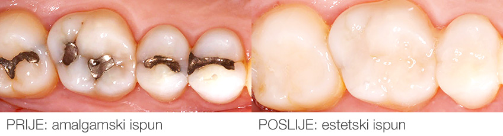

Izbeljivanje

Izbeljivanje zuba je procedura u kojoj se uklanjaju razne diskoloracije sa površine zuba, a sama boja zuba postaje belja. Samo izbeljivanje spada u najpopularnije procedure u stomatologiji i može značajno da poboljša izgled. Američka dentalna asocijacija je objavila svoj stav koji kaže: "Beljene zuba indikovano od strane stomatologa koje se vrši u kućnim uslovima, preparatima renomiranih proizvođača, a pod stalnim nadzorom stručnog lica u relativno kratkom vremenskom trajanju, apsolutno je siguran i efikasan način izbeljivanja zuba.
Tehnika beljenja zuba u ordinaciji laserom (In office bleaching)

Ova tehnika podrazumeva aplikaciju gela za izbeljivanje na zube u ordinaciji pri cemu se koriste izbeljivaci visoke koncentracije u strogo kontrolisanim uslovima, sa zaštitom mekih tkiva i aktivacijom gela laserskim zrakom. U našoj praksi koristimo biolase epix, najpoznatiji američki brend kada su u pitanju laseri. Više na našoj stranici.
Tehnika kontrolisanog kućnog izbeljivanja zuba (home bleaching)

Ovo je procedura pri kojoj se pacijentu u ordinaciji nakon uzimanja otisaka vilica izrađuju udlage (tray-evi) za zube, koji služe kao nosači gela za izbeljivanje u kućnim uslovima. Ova procedura je veoma bezbedna i jednostavna jer se koriste gelovi za izbeljivanje slabije koncentracije renomiranih svetskih proizvođaca (Dentsply, Vivadent, Ultradent), koji ne oštećuju meka tkiva. kucno izbeljivanje zuba Pacijent nakon kratkotrajne obuke u ordinaciji veoma lako sam izbeljuje svoje zube, noseći aplikacioni tray napunjen gelom tokom noći ili dana dolazeći na povremene kontrole kod stomatologa. Iako je ova tehnika relativno jednostavna i jeftinija od laserskog izbeljivanja rezultati nastupaju postepeno a za vreme izbeljivanja neophodna je apstinencija od pušenja i konzumiranja prebojenih materija (kafa, čaj, kola, crno vino, sveža šargarepa, cvekla itd.).


– kada želite da promenite boju,oblik i veličinu zuba
Kao neželjene pojave prilkom beljenja zuba treba navesti prolaznu osetljivost zuba na hladnoću koja se javlja kod 50% pacijenata. U tim slučajevima se savetuje pacijentu smanjenje ucestalosti nošenja aplikacionog tray-a (umesto svaku – svaku drugu noć), smanjenje koncentracije gela za izbeljivanje i tretiranje zuba preparatima koji smanjuju osetljivost zuba. Ova pojava je uvek prolaznog karaktera. Nakon izbeljivanja i stabilizacije boje zuba ( nakon najmanje dve nedelje) treba zameniti sve vidljive plombe jer njihova boja više ne odgovara boji izbeljenih zuba. Avitalni zubi tzv. "mrtvi zubi", su oni kojima je izvađen živac iz kanala korena. Vremenom takvi zubi menjaju boju i postaju primetno tamniji od okolnih "živih" zuba. Procedura izbeljivanja ovih zuba traje tokom više dana i u najvećem broju slučajeva moguće je povratiti zubu staru boju i stari sjaj.
Estetski Ispuni
Izrada estetskih ispuna (plombi, inlay-a, onlay-a) redovan je postupak popravke zuba oštećenih karijesom ili jednostavnom traumom. Ispuni predstavljaju deo estetske stomatologije, jer razvoj dentalnih materijala omogućava izradu direktnih i indirektnih ispuna od kompozitnih materijala i dentalne keramike koji u potpunosti odgovaraju boji prirodnog zuba, te time zadržavaju prirodnost i estetiku izgleda Vaših zuba i osmeha. Nekada su ispuni izradjivani od amalgama, ali danas, sa napretkom tehnologije stomatoloških materijala, koriste se ispuni ili plombe u boji zuba.
Fasete
Šta su to fasete? Veneers ili fasete su simbol savremenog i uspesnog coveka 21. veka. Od holivudskih zvezda pa do Vas, fasete su promenile mnoge osmehe. – Fasete su tanke ljuspice od keramike koje se postavljaju na prednju površinu zuba. Izrada faseta zahteva minimalnu preparaciju prednje površine zuba jer su fasete veoma tanke, dok ostale površine zuba ostaju netaknute što predstavlja mnogo bolje biološko rešenje u odnosu na preparaciju zuba za krunicu. – Specijalnom adhezivnom tehnikom se fiksiraju,odnosno lepe na zub. – Uz adekvatan odabir boje i dizajna faseta, omogućićemo Vam prirodan izgled i lepši osmeh.
Kada je faseta pravo rešenje za vas?
– kada želite da promenite boju,oblik i veličinu zuba
– kod tetraciklinskih prebojenih zuba koji ne reaguju na proces beljenja
– kada želite zatvoriti razmak između zuba
– kada želite da restaurirate polomljen ili karijesom oštećen zub
Copyright © All rights reserved | This template is made with by Colorlib